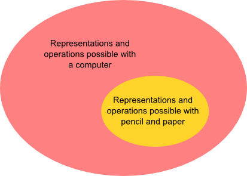

Let me begin with some excerpts that explain in broad terms what Kill Math is about:
When most people speak of Math, what they have in mind is more its mechanism than its essence. This "Math" consists of assigning meaning to a set of symbols, blindly shuffling around those symbols, and then interpreting meaning from the shuffled result...
This mechanism of math evolved for a reason: it was the most efficient means of modeling quantitative systems given the constraints of pencil and paper. Unfortunately, most people are not comfortable with bundling up meaning into abstract symbols and making them dance. Thus, the power of math beyond arithmetic is generally reserved for a clergy of scientists and engineers...
We are no longer constrained by pencil and paper. The symbolic shuffle should no longer be taken for granted as the fundamental mechanism for understanding quantity and change. Math needs a new interface...
Kill Math is my umbrella project for techniques that enable people to model and solve meaningful problems of quantity using concrete representations and intuition-guided exploration. In the long term, I hope to develop a widely-usable, insight-generating alternative to symbolic math...
A person should not be manually shuffling symbols [with pencil and paper]. That should be done, at best, entirely by software, and at least, by interactively guiding the software, like playing a sliding puzzle game. And, more contentiously, I believe that a person should not have to imagine the interpretation of abstract symbols. Instead, dynamic graphs, diagrams, visual models, and visual effects should provide visceral representations. Relationships between values, exponential blow-ups and negligible terms, should be plainly seen, not imagined...
In his talk Media For Thinking the Unthinkable Victor states a closely related but even more ambitious program. He quotes Richard Hamming's essay on The Unreasonable Effectiveness of Mathematics:
Just as there are odors that dogs can smell and we cannot, as well as sounds that dogs can hear and we cannot, so too there are wavelengths of light we cannot see and flavors we cannot taste. Why then, given our brains wired the way they are, does the remark "Perhaps there are thoughts we cannot think," surprise you? Evolution, so far, may possibly have blocked us from being able to think in some directions; there could be unthinkable thoughts** Quantum mechanics is famously difficult to understand. This is due in part to unresolved conceptual problems in the foundations, which make it fair to say that no-one in the world really understands quantum mechanics. I have wondered for many years if the principal difficulty is that our brains aren't wired the right way. To recast this in Hamming's terms, perhaps quantum mechanics only appears difficult, but is actually easy to understand, provided one can think "thoughts we cannot think". Note that I'm not saying that the trouble is merely that we're missing some key theoretical idea or set of ideas. That's the point of view usually taken by people who worry about the foundations of quantum mechanics. Rather, perhaps we need to expand the class of thoughts we can think in some much more radical way. An argument for this point of view is that our brains evolved to understand a classical world. Such brains might perhaps come very poorly equipped to grasp a theory such as quantum mechanics, which doesn't obey principles as basic as local realism.
Now, let me add the caveat that I believe the conventional point of view is likely correct, and we simply have not yet found a good but relatively conventional explanation of quantum mechanics, the kind of explanation which could have been understood with some work by a physicist in, say, 1950, without access to special tools to extend their mind. But part of me wonders if a more radical expansion of what a theory is may be needed..
Victor points out that we have, of course, built tools enabling us to see wavelengths of light we cannot see, to hear sounds we cannot hear, and so on. And perhaps, as the title of his talk suggests, it is possible that we can build tools to enable us to think unthinkable thoughts.
These are remarkable ideas. Of course, they are not without precedent. Many people have developed related ideas, including William Ross Ashby, Douglas Engelbart, and Alan Kay, to name but a few. But, in my opinion, Victor's development is unusually promising and deep. I'm writing these notes to help me understand what Victor is doing, how he's doing it, and the most promising directions for further work. I also plan to relate Kill Math to my own creative work, and hope it will help inspire some new directions in my work.
The notes were more difficult to write than I expected. In retrospect, I can see that while Kill Math is certainly easy to read, it is in fact very challenging to understand at the deeper level that would enable one to do similar work. (I've made this mistake with other works, too. Mea culpa. ) Part of the reason is that I have much less design and programming experience than Victor** And, I would guess, much more mathematical research experience, which creates another kind of barrier to understanding., and the deeper I got, the more keenly I felt this deficit. More on this later.
Through the remainder of these notes I will use the convention that unmarked quotations are from Kill Math. Quotes from other sources will be explicitly marked.
Two examples: interactive difference equations and scrubbable numbers
To make the above ideas more concrete, let me show two of the
examples that Victor creates. The first is a video
demonstrating a medium for understanding difference equations.
The video is best watched fullscreened, which can be done by
clicking the four-arrow icon  in the bottom right of
the video player:
in the bottom right of
the video player:
As I wrote in my essay
Reinventing
Explanation, this medium "enables many powerful
operations, such as: tying parameters together; the
instantaneous feedback between symbolic and graphical views of
difference equations; and the language for searching over
functions. [Bret Victor has] created a vocabulary of
operations which can be used to understand and manipulate and,
most crucially of
all, play** There is a
beautiful
talk by Stephen
Wittens where he talks about (and demonstrates) how
powerful play can be in mathematics. You can see this too in
Seymour
Papert's Mindstorms.
My experience when learning a new area of mathematics is that
there is often a long period of time in which working with it
is a painful slog. The simplest things are very difficult to
do. But after many hours you go past some sort of threshold.
Things begin to speed up, and it becomes very enjoyable to
work with the objects in your new domain; you become able to
play. Well-designed new media may speed up this process of
getting-to-play. with difference equations. And with
enough exposure to this medium, we'd begin internalizing these
operations: we'd begin to think about difference equations in
this way."
The difference equation medium is very interesting. But it's easier to analyse a simpler and cruder precursor, namely, Victor's Scrubbing Calculator.
Let me show the scrubbing calculator in action, solving a problem that would ordinarily be solved with (what we think of as) algebra. You can details of the problem and its context in the link in the last paragraph. The basic gist is that Victor asks us to consider a (real) design problem that came up when he was designing the graphics in a book. The design problem was to figure out how large to make the height of the bars in a bar chart, in order that the chart fill up the available space. The size (768 px) of the available space as well as the margins (63px and 140px) and the gaps between bars (20px) were already known, but could be slightly adjusted if necessary. This problem is, of course, easily solved using algebra. Click on the play button below to see a demonstration of a different approach:
What's going on is perhaps already obvious from the earlier video, but just to spell it out: he's typing in his existing constraints on the margins and gap, and making a guess for the bar height. Then he scrubs over the value for the bar height until the answer on the right is what he wants, perhaps with some minor adjustments to other quantities.
Here's another example, which illustrates some different ideas. In this case, Victor is using the scrubbing calculator to split the bill for a road trip. His friend Andy paid 2910 dollars during the trip, while he (Bret Victor) paid 426 dollars. How much money does he owe his friend, in order that the bill is split evenly? To solve the problem, Victor "connects" two quantities in the equations, so they are tied together:
There is more in the essay: Victor also adds operations to "lock" and "unlock" numbers in the equations. I won't discuss those operations here, since we've already got quite a bit to be thinking about. But those operations are interesting, too.
What should we make of these kinds of examples?
As someone mathematically trained it's tempting to reflexively respond: "That seems harder than solving the relevant equations." That's true if you've already spent a great deal of time mastering traditional techniques for solving such equations. However, that's an unfair comparison, and it's not clear whether someone learning this for the first time would have more trouble with algebra or with learning the scrubbing calculator. I suspect that many would find the scrubbing calculator easier, and some people would find it far easier. There's an old joke in which a mathematics professor begins posing a problem: "Suppose $x$ is equal to $15$...", only to be interrupted by a student: "But professor, what if $x$ is not equal to $15$?" My own experience in talking about mathematics with others is that there are many intelligent people with exactly this kind of block. And when someone is blocked in this way it's very difficult for them to really understand what's going on when manipulating algebraic expressions.
Another typical of skeptical response to the scrubbing
calculator is to emphasize the value in learning to
use the abstract symbols. Of course, there is great value in
that, but it's an exceptionally poor basis for comparison.
The value in the traditional approach is only gradually
revealed over years of mathematical training. We should not
expect to understand the value of the scrubbing calculator all
at once, in our first reflexive response. We would need to
develop the ideas in the scrubbing calculator much further in
order to understand the value in this alternative
approach** Much of the online
commentary directed at Kill Math completely misses
this point. You have people enumerating all the great things
about traditional analytic methods. Many of those people have
trained for years (or decades) with those analytic techniques,
yet have only a few minutes exposure to these alternative
techniques. For many examples of this style of commentary,
see the
comments here.
Of course, detailed criticisms in this vein may be useful as a
way of
improving the medium (see,
e.g., Evan
Miller's stimulating critique) , but they have little
value as a means of evaluating the potential of the medium,
which is often the intent.
(Incidentally, this erroneous approach to evaluating the
potential of anything new is so common, across so many fields,
that I wonder if it shouldn't be regarded as a cognitive bias,
along the lines of things like confirmation bias and the
fundamental attribution error. ) . In essence, we're
comparing a few minutes exposure to a medium developed by one
person with thousands of hours of training in a tradition that
has been developed over thousands of years by thousands of
people. It's perhaps not so surprising that the latter has
some advantages! But those advantages are irrelevant for the
purposes of making a comparison. It's like trying to
understand cubism's potential to transform how we see merely
by looking at Braque's first cubist paintings:

What makes the scrubbing calculator seem remarkable to me is that it develops new atomic operations which we can use to think about mathematics. I've shown two such operations: the basic scrubbing operation, and the "connection" operation. We also saw several such operations with the difference equation medium, e.g., the act of searching over an expression. More subtly, the notion of instantaneously graphing an expression is, I believe, a new basic operation; it changes the experience of mathematics.
In the case of the scrubbing calculator these atomic operations are introduced as a means to a particular end, namely allowing people to solve algebraic problems while working with concrete numbers:
This work is about allowing people to solve algebraic problems while working entirely with concrete numbers, instead of abstract symbols. We are accustomed to assuming that variables must be symbols. But this isn't true — a variable is simply a number that varies. If we are able to vary numbers interactively, then we don't necessarily need to name them... We conventionally use rote algebraic mechanisms to convert the equation into an explicit expression. But this is not paper, and a computer has no trouble calcuating an implicitly-defined number... [We also] use $x$ to mean, "There is a single number that should appear in two different places"... But this is not paper, and a computer has no trouble keeping track of multiple instances of an object. With a calculator like this one, we can connect numbers to make them the same, instead of having to name them.
This passage emphasizes rather explicitly how the computer enables new atomic operations. It strikes me that although these atomic operations were introduced in response to a specific problem, they can potentially be repurposed and used to serve other ends. In other words, we can take these new atomic operations and try them out in new contexts, trying to push them as far as they can go. The most powerful will, no doubt, turn out to be extremely useful in a wide variety of contexts** There's a related phenomenon in mathematics: surprisingly often, famous results began life as lemmas in papers whose "main" result was some now largely forgotten theorem. Instead, it was the lemma, originally just waystation along the way to proving the theorem, which was found to be of utility in many other contexts. You might ask: why not just aim at the lemma? I'm not sure it can be done. The utility of such lemmas is usually that they can help solve a wide variety of hard problems. And so it is natural that they are first discovered en route to solving a specific hard problem. Absent such problems, I don't know that it's easy to determine which tools will be most powerful. .
Everyone who learns mathematics understands that how we think is strongly influenced by the elementary operations and representations available to us. Think of how decimal notation enables us to reason in much more powerful ways than roman numerals. Or about how the invention of co-ordinates made possible a new approach to geometry. Much of the history of mathematics has been about expansions in our reasoning power enabled by the invention of new mathematical objects, and by the invention of new ways of representing and operating on mathematical objects.
Historically, those representations and operations have been constrained by the accident that we're using paper and pencil as our medium. Changing the medium enables an expansion of those representations and operations: 
Representations like the scrubbable numbers and operations like connecting two numbers are examples of this expansion. But, of course, there's no more reason for them to be an endpoint than there was for Babylonian numerals.
One problem with the diagram above is that it conveys a monolithic impression of what a computer is. Namely, a computer is either: (a) a thing with a qwerty keyboard, a mouse, a flat LCD monitor about 20-30 inches in linear dimension; or (b) a flat device, about 4-10 inches in linear dimension, with a touchscreen which you manipulate by tapping and swiping. Of course, it's a historical accident that these are the dominant modes of interaction right now, and it will certainly not remain true in the future. It's interesting to ask questions like: what new representations and operations become possible when you're using a kinect? A wii remote? A leapmotion device? An Oculus? You can ask questions like: how would you interact with your voice? With your eyes (using eye-tracking and similar tools)? With motions of your body? I suspect that even taking a silly question seriously – say, what kinds of interaction can you do with your elbow – may be enlightening. And, of course, you can turn it around, and ask questions like: what hardware and interface would let us best explain general relativity? Or molecular biology? Or quantum mechanics** Had this question been seriously asked in 1970 I suspect quantum computers would have been invented earlier. Feynman's pioneering 1982 paper on quantum computing started from a related question, namely: what kind of computer would you need to use to simulate physics??
Scrubbable numbers over many levels of granularity
At the end of Victor's essay on the scrubbing calculator, he poses the following exercise:
Granularity. Some numbers need to be adjusted over large ranges — you may want to go thousands in one stroke. Other numbers might need multiple decimal-point precision. The tool can't necessarily infer which is which. Can you think of a UI that could accomodate adjustments at different levels of granularity?
Here's the outcome of my first set of attempts at this exercise. Mouseover either number on the left of the equation below, click on one of the revealed icons, and adjust the number.
This gives us more flexibility than the original scrubbable numbers, because we have the ability to adjust numbers both linearly and exponentially. However, it has a number of deficiencies.
Some of the deficiencies are relatively minor problems with the look and feel, including: (1) the expansion and contraction of the scrubbable numbers causes distracting changes to the overall layout of the equation, and would perhaps work better if the icons were below rather than alongside the numbers; (2) the icons need to be more responsive, perhaps changing in more obvious way to indicate they've been selected, and the colour choices could do with more work; (3) there are some inconsistencies in the way highlighting is done that should be ironed out. It's easy to make progress on these and other problems with just a little more work.
However, one really serious deficiency is that this approach severely limits the class of numbers you can reach. To see the issue, suppose you use the exponential slider to increase a number out to near (say) 1 billion. Then each increment of the slider moves you by an amount of about 100 million. You can use neither the exponential nor the linear slider to adjust over that entire range. And so many numbers are essentially inaccessible.
I'm somewhat embarassed to say that I didn't anticipate this difficulty in advance. In a backhanded way, that's encouraging: this new representation made a problem obvious which I didn't see initially, despite having spent hundreds of hours of my life thinking about exponential versus linear growth!
Can we do better? In the equation below, click and hold on one of the numbers on the left-hand side, and then slowly drag the mouse quite a ways to the right (or left), while continuing to hold down the button. Then repeat the process a few times, to get a feel for what's going on. Note that for this particular problem, we don't actually need to explore over many orders of magnitude, and so this approach is overkill. Still, it's a context that's familiar from Victor's example above.
A little experimentation will show that scrubbing here has a nonlinear response. When you're near the number, it changes by a small amount. As you get further away, it starts to change by larger and larger amounts. This allows both very small and very large (albeit coarse) adjustments. The advantage, though, is that by making a few adjustments we can reach an arbitrary number. In essence, we begin our exploration by finding the right order of magnitude, and the most significant digit, then explore to find the second most significant digit, and so on.
Of course, there are still many deficiencies. The design could do more to unobtrusively cue the user as to the expected behaviour. We have limited range of motion on the left, which makes decreasing numbers somewhat awkward. I explored several response functions, and this worked the best on my machine (with its particular setup of mouse and screen resolution). However, I wouldn't be surprised if a thorough systematic investigation of response functions resulted in a better response function.
More seriously, the above demonstration has the problem that the context is wrong. When doing this kind of design work we don't need to explore over many orders of magnitude; it's the wrong tool for the problem. Let's look briefly at a better problem.
It's a problem about world population. Let's assume that world population growth is 1 percent per year, and we're interested in knowing: what does the population need to be in order that in 20 years time the population will pass 10 billion? This problem is a little artifical, but we'll still learn some useful things by considering it. Try scrubbing over the first number in the following equation:
Some experimentation suggests that it might make sense to give the slider some memory. In particular, the natural way to explore is first to get the overall order of magnitude about right, then to explore one or two orders of magnitude lower, then one or two orders of magnitude lower, and so on.
Another natural idea to explore is allowing the growth rate to be scrubbable. A challenge here is that the natural way to scrub the growth rate involves only a linear response (the same is true for the "20 years" term). It'd perhaps make sense to cue the user to the difference between numbers needing a linear versus a nonlinear response. How could we do that in a natural way?
In my first experiments with the above, I wrote the growth rate as $1.01$ per year. A challenge in scrubbing such numbers is that we both want to be able to increase and decrease the scale of the scrubbing. How could that be achieved?
I won't try to address all these questions here. Still, it's obviously fertile ground for exploration, and might be fun to come back to.
Comparison to Mathematica and other existing systems
How do the ideas in Kill Math relate to systems such as Mathematica, Maple, Matlab, and so on?
A skeptic may, for instance, respond to Kill Math with: doesn't Mathematica (or some other such system) already offer a new interface to mathematics? Isn't Mathematica tremendously useful? Shouldn't we focus our efforts on this kind of system, or open source alternatives such as Sage?
Let me begin by pointing out the obvious, so I don't lose sight of it** This perhaps seems superfluous, but I find I often lose sight of the obvious when I get confused, as inevitably happens.: of course the ideas in Kill Math are radically different than in the other systems. This is immediately evident upon simply looking at the prototypes. The problem is to understand and articulate what the differences are, and what is new in Kill Math.
For concreteness I will begin my analysis by comparing Kill Math to just one system, Mathematica. Then I'll turn to other systems.
Mathematica is certainly tremendously useful. But that doesn't mean it's doing the same thing as the prototypes in Kill Math. Consider the type of problems typically solved by Mathematica. Amongst the most common are:
- Integrating an expression.
- Solving a set of equations.
- Simplifying an expression.
- Substituting a value into an expression.
What is new here, compared to 19th century mathematics, is that: (a) the solution to the problems is automated, and can be done with no (or little) human intervention; and (b) the scale at which these activities can be carried out – it is not uncommon to use Mathematica to deal with expressions involving thousands of terms. Both these abilities qualitatively change how people engage with mathematics, dramatically enlarging both the class of problems they're willing to attack, and the class of problems they're able to solve.
However, note that each problem in my list above is of a type that would have been familiar to 19th century mathematicians, the data specifying the problem is given in a form that would have been familiar to 19th century mathematicians, and the solution to the problem is given in a form that would have been familiar to 19th century mathematicians.
In these senses, Mathematica doesn't change what we think mathematics is. Many of the core objects and operations would have been familiar to a 19th century mathematician.
Are there any ways in which Mathematica does change what we think mathematics is? Well, Mathematica does introduce several new fundamental objects and operations into mathematics. In particular, graphs, animations, and notebooks are all new fundamental objects** Or nearly so. What I mean by fundamental object is that the object should have, at the least, a reasonably powerful interface allowing it to be inspected, manipulated, and related to other fundamental objects. This is true, with some qualifications, for graphs, animations, and notebooks in Mathematica., with associated fundamental operations. Of course, things like graphs and notebooks (less so animations) have long been part of mathematics. But the benefit in Mathematica is that we can operate on them, that is, we can perform programmatic operations involving graphs, animations, and notebooks. Put another way, we can treat these as things in a way this is not possible with paper and pencil. On paper, a graph is a tremendously complex aggregate typically involving hundreds of strokes of the pen. On a computer it may be treated as a single object which can be manipulated in powerful ways using single commands.
Ideally, these new objects will be data structures with a beautiful, clean, and powerful interface, one that integrates well with the rest of Mathematica, and makes it possible to programmatically reason about these objects. For instance, with a well-designed interface it ought to be trivial to say things like: plot this graph over many random choices of such-and-such parameters, and find the version of the graph which shows the greatest divergence in behaviour between these two quantities of interest. Or to say: contrast the complexity of underlying reasoning used in two different notebooks (say, two different proofs of the same theorem). Or to say: pipe the output from these two notebooks into this other notebook. And so on. Broadly speaking, as designers of such a system we want to ask questions like: What new classes of object can we introduce? What are powerful operations that could be performed on these objects? And: Are there powerful new data structures we can build from these objects (and associated operations on those data structures)? When we do this we make it possible to think in powerful ways about these new objects. We are, in a real way, enlarging the space of thoughts we can think** Incidentally, there is another class of new objects added in Mathematica, beyond notebooks, graphs, and animations. That's very large expressions. 100 years ago it was not practical for a mathematician to deal with an expression involving 10,000 terms, unless there was some regularity that enabled them to deal with many terms at once. Certainly, one couldn't treat such an expression as a single object which can be manipulated in powerful ways. Nowadays, it is routine to deal with such expressions, and there are powerful operations which can be performed with such expressions; there is a real sense in which we can now think about such expressions, when formerly we could not. This is another example of enlarging the space of thoughts we can think..
Now, I'm not a Mathematica guru, but my impression is that the ideal described in the last paragraph isn't quite what's happened. Many of these things are in principle possible in Mathematica. But that doesn't mean they are always easy and natural. For example, you'd like for it to be trivially easy to inspect, manipulate and reason about the contents of Mathematica notebooks, having powerful tools to access things like the parse trees and the chains of transformation rules used by Mathematica to solve problems. That may well be possible – I don't know enough about Mathematica to be sure. But my experience with Mathematica suggests that it's certainly not what the system was designed to do. With that said, the system has gradually evolved in this direction, with these new objects and operations gradually becoming more powerful, and moving toward becoming first class mathematical citizens. However, it does not appear to have been a high priority to push the design of those new objects and operations, nor to make them central to the system.
To some extent, Mathematica looks to me like what you get when a very competent and creative traditionally trained mathematician** Wolfram's PhD was, in fact, in theoretical physics. For my current purposes, though, the difference doesn't much matter. (Indeed, there's a lot of overlap between the two in training). designs a system for doing mathematics. The problems it solved, at least in early versions, are exactly the type of problems that competent and creative mathematicians have been interested in for decades or centuries. And so the mathematics started out represented in very conventional ways. The system has only gradually added new fundamental classes of object and operation.
By contrast, the prototypes in Kill Math look to me like what you get when a very competent and creative designer starts designing systems for doing mathematics. What's at issue is, in fact, the fundamental objects, operations and representations that we have. Think about some of the operations introduced in the prototypes above:
- The operation of "tying" two quantities together, to form a single linked entity.
- The operation of scrubbing a number.
- The operation of "searching" over the graph.
- ...
These operations are, in turn, associated to new fundamental objects, such as tied numbers, and search expressions for the graph, as well as redefining the way we think about old objects: a scrubbable number is not the same as an ordinary number, in important ways. In particular, scrubbing enables new kinds of exploration and play. That may sound like an exaggeration, and perhaps it is when we're dealing with very simple prototypes, but as the prototypes become more sophisticated I this it makes more and more sense to think of scrubbable numbers as truly a different type of object. Imagine you are playing a first-person shooter game, but instead of directly controlling the motion, you instead repeatedly have to type in an angle describing the direction you're facing. This would change your relationship to the character, and not just in the obvious sense that it would slow down the rate at which you could control the character; it would change the sense of control, and give you much less visceral feedback. Scrubbable numbers point the way toward a different relationship with numbers.
This sounds very wishy-washy and touchy-feely. Yet I think it's at the heart of what it means to understood something. Littlewood is supposed** The story is amusing. Littlewood was reading the proofs of some remarks by Hardy on Ramanujan: "as someone said, each of the positive integers [etc]". Littlewood responded: "I wondered who said that; I wish I had". In the final version it read "it was Littlewood who said...". There is more to the story, which is told in Littlewood's beautiful Miscellany. to have remarked that "every positive integer is one of Ramanjuan's personal friends". That's a statement about the relationship Ramanujan had with the integers.
Returning to Kill Math, and to sum up, where it differs from Mathematica is in focussing on identifying new types of mathematical object, new representations (both for new and old objects), and new operations (again, both for new and old objects). All this happens to some extent in Mathematica, but it is not the design goal in the same way as in Kill Math. Rather, I believe Mathematica's core focus is on outsourcing cognition: doing the kind of cognitive tasks mathematicians have always done, but much faster, and more reliably. The expansion of what mathematics is is a more incidental goal. Both goals are, of course, very worthwhile; Mathematica (and systems like it) are, for the time being, much more mature. It is interesting to consider the possibility of some future system
A parenthetical remark on notebooks: The notebooks are interesting as a new way to represent and experience a collection of mathematical ideas. A nice example to convey the flavour comes from this iPython notebook by Peter Norvig. It's in Python, but similar things can be done with Mathematica notebooks. The link takes you to a static web version of the notebook, but the important thing is that you can download the notebook and execute it. When you do that, what the notebook offers is an experience of certain important mathematical ideas. Another person can go in and begin to tweak and extend and even transform the ideas Norvig is expressing. So the notebook provides a vivid demonstration of counter-intuitive results, which can provoke questions, and provide a relatively easy way for a person to then answer those questions. In other words, it's creating a genuine experience of non-trivial mathematical ideas; an experience of being able to play with them, in the terminology I used earlier. That's something that only a tiny fraction of the population have ever experienced. Now, a similar experience could have been created with 19th century tools. But it would have been pretty darn difficult to achieve, and hard to scale the experience. With Mathematica or a tool like ipython it becomes much easier. It's not yet trivial, though, since while playing with short Python scripts is easier than conventional mathematical modelling, it's still a relatively difficult intellectual activity.
What about systems other than Mathematica? I have only a little experience with systems such as Matlab, Maple, and Sage. My impression is that many of my remarks about Mathematica apply to those as well. In particular, many of the core objects and operations in those systems are objects and operations well understood by 19th century mathematicians. New objects and operations have been added, but it's mostly been done piecemeal, in a rather gradual fashion, in a manner similar to that I described for Mathematica. Again, it does not appear to have been a high priority to push the design of those new objects and operations, nor to make them central to the system.
There are, of course, many systems for exploring mathematics that I haven't listed above. Think of Coq, Wolfram Alpha, D3, R, Julia, Prolog, Logo, Scratch, Haskell, and others. All of these are, in their own ways, different to both Kill Math and Mathematica** Wolfram Alpha is an extension of Mathematica, but is fundamentally different in enough ways that it requires a separate analysis. The same seems likely to be true of Wolfram's new programming language, which I have not yet looked at in any detail., and require their own analyses. I am not yet sufficiently familiar with these systems that I'll attempt a detailed commentary. I will, however, note that these systems also add new first-class objects and operations. In particular, they reify data sets and proofs: these become things that can be inspected, manipulated, and related to other objects. However, I do not know to what extent this sort of extension is the raison d'être of these systems, and to what extent it's simply an an unintended consequence of other design decisions.
Moving theorems into the user interface
Theorems express surprising connections between mathematical concepts. Think of the way the fundamental theorem of arithmetic connects the positive integers to the primes. Or the way the Cauchy-Schwarz inequality connects inner products and lengths. The information the Sylow theorems give us about the size of subgroups of a finite group. The fundamental theorem of algebra tells us that there is a root for every non-trivial polynomial over the complex numbers (or, equivalently, that such a polynomial can be factored into monomials). And so on. Ideally, such connections should be made visible through the user interface. That is we should move theorems into the user interface. Tipping it upside down, we can view theorems as challenges to develop a user interface which reifies those theorems in a powerful way, providing the user with cues that help them reason, and representing mathematical objects in ways that help suggest the relationships they obey.
Knuth once said:
I have been impressed by numerous instances of mathematical theories that are really about particular algorithms; these theories are typically formulated in mathematical terms that are much more cumbersome and less natural than the equivalent formulation today's computer scientists would use.
We can go much further. Theorems are traditionally presented as static statements about the relationship between mathematical objects. But the static nature of such theorems is a consequence of historical accidents about the media we've used to represent mathematics, not of the fundamental nature of mathematics. We could equally well have theorems which are actively reified in the environments in which we think; they respond to what we do, they cue us when needed. That is, they're visible, active parts of the mathematical process.
Let me give an example that at least starts to hint at what I'm suggesting. It's not what we'd usually call a theorem** I'm really using the word "theorem" as shorthand for "non-trivial mathematical connection"., but it's a very simple example of the sort of connection often made in theorems. It illustrates how the value of $\sin(\theta)$ is just the $y$ co-ordinate for a point on a unit circle at an angle $\theta$ from the horizontal axis. Try clicking and dragging to adjust the angle on either side of the frame. Or click "Start" to see how the behaviour changes as $\theta$ changes** This design is not mine, nor do I know where the idea originated (I have seen variations on this idea many times, in slightly different formats)..
As I said above, this starts to hint at what I'm talking about. It does provide a nice, concrete illustration of a fact that many students don't pick up on. One shortcoming is that it's about explanation, not discovery. Explanation is valuable, but it's also a much less challenging context than discovery. When you're doing discovery you don't know what results to apply.
To unpack that a bit further, let me discuss another fun
example:
Euclid: The Game. In
level 1 of the game, the player is presented with two points,
A and B, shown below:

They are asked to use five tools – the five icons on the top left – to construct an equilateral triangle. The tools do things like inserting a line segment, or constructing a circle with a specified center and specified edge point (which could be, for example, points A and B). By using those tools appropriately we can construct an equilateral triangle.
Marvellous! We now know something new: we've learnt how to use those elementary tools to construct an equilateral triangle. Here's the next level of the game:

If you look closely, you'll see that there is a new icon in the top row, representing our ability to construct an equilateral triangle. We're growing a user interface, moving the mathematical relationships we discover into that interface. And as a result we can see what we know about different mathematical objects.
This is a nice idea, but has many shortcomings as implemented. In the game as shown, the capabilities we add are relatively opaque. A user can click around for a while, get lucky, and add an extra tool into their geometric kit. They do not necessarily understand why what they did worked. Oftentimes it's that understanding which is really valuable, and which we most want people to internalize. But that process of understanding is not ** It might be possible to improve the process of understanding by turning the game into Euclid Golf: challenge people to find constructions that are the simplest possible (e.g., required least effort, in some natural metric). The requirement of minimizing the constructions will tend to increase understanding, as people take their initial, imperfect solutions, and try to understand what is essential, and what is cruft that can be eliminated. I'm not sure this would work: many of the "random" solutions that people are producing are already minimal or near-minimal. But maybe there's the seed of an idea here. Might be a nice future project. not what's emphasized in the current game.
Another problem is that we know so much. Think of all the different geometric constructions that we know. How could we fit all those thousands of constructions in a natural way into a user interface? Without some clever ideas the interface is going to be too confusing to be useful.
This problem arises also in other contexts. Imagine now that we're working on some mathematical problem, and we write down $n$ to denote a positive integer. In an ideal mathematical super-notebook, we'd potentially see $n$ in many different ways. For instance, perhaps the most famous representation is that every such integer is a unique product of primes** Note, by the way, that I'm not saying that when you write down an integer — say, 91 — you should be able to see its prime factorization (7 x 13). I'm speaking more abstractly: every integer $n$ has a unique prime factorization $p_1^{m_1} p_2^{m_2} \ldots p_k^{m_k}$. We should easily be able to reason about these alternate representations.. But it's just one of thousands of representations known for positive integers. Which representations are relevant?
The art of mathematics is very often in choosing which representation to apply in order to obtain insight. A good mathematician internalizes many different representations, understands how they relate to one another, in what contexts they tend to be applied, and how. A good user interface would reflect this plethora of possibilities, and help hint or cue you to use the right representation at the right time. This is what I was referring to above when I said that explanation is a much less challenging context than discovery. When you're doing the kind of exploration that leads to discovery you don't necessarily know what results to apply. Thus, it seems to me to be a much easier problem to design user interfaces for explanation than for discovery.
So I don't immediately see how to design a user interface for discovery. I've made a few initial on-paper attempts, working naively, and they have not worked so well. I may recount this in future notes – it's worth thinking about what went wrong. Certainly, this is a problem deserving sustained effort! I will make three comments that occurred to me while working, however.
First, in terms of the richness of the user interface needed to do discovery: there may be a considerable advantage to using a 3d environment, like that provided by the Oculus Rift. I expect that having 3 spatial dimensions will make it possible for designers to create interfaces that make it possible for users to work in a far richer and more complex choice environment than is currently the case; enough to make a dramatic qualitative change in the experience.
Second, I proceeded by picking a piece of simple but genuine mathematics where it's possible to give a plausible account of discovery. I found that having an existing narrative of discovery helped in stimulating user interface ideas. My initial experiments were with the main result from a paper I wrote in 1999. It solves a simple but fundamental problem about the representation of states in quantum mechanics. The benefits of this were: (a) I have a pretty good idea of how the result was discovered** This sounds facetious, but is not; I don't think we really know what's going on in our ; (b) the argument is extremely simple; (c) it's an argument based almost entirely around several switches of representation.
Third, it seems to me that an environment for doing mathematics needs an exquisite, supremely flexible and expressive type system. I say this with some trepidation, since theorists of programming languages have developed a theory of types, but that really doesn't seem to be what I'm talking about.
Let me see if I can explain what I mean by this. Suppose I'm investigating a problem in quantum computing, and in the course of the problem I encounter some matrix, $M$, which I realize is central to the problem. As soon as I see such a matrix, all sorts of lights go – I will have in mind results like: (a) the singular value decomposition; (b) the Schur decomposition; (c) the fact that the matrix has at least one eigenvector (if it's a complex matrix), and so on. But I may suspect that the matrix is Hermitian. Often that can be proved with just a little work. If I can do that, then I immediately add a few extra facts: (d) the matrix is diagonalizable by a unitary matrix; (e) the matrix has real eigenvalues on the diagonal; (f) the singular values are the absolute values of the eigenvalues, and so on. Having established the Hermitian property, I may suspect that the matrix is positive. If I can establish that, I get access to another new slew of facts. And so on. Ultimately, one ends up reasoning about objects where you have long lists of properties: this is a positive, Hermitian matrix, with such-and-such a gap between the first and second largest eigenvalues, the trace is such-and-such, and so on. You must be able to hold all those properties in your head, understand the implications of the properties, and how they relate to one another.
What I am trying to convey here is that when reasoning about mathematical objects I am constantly learning new things about them, and that changes my internal representation of the object. In many ways, that seems to be much of what mathematics is: little incremental increases in knowledge, noticing this and that property, gradually building up your understanding. Needless to say, this process of constantly updating one's understanding is not like the type system in most programming languages. Yet it nonetheless seems somewhat close in spirit. What you want is a type system which is flexible enough to express all these many, many properties. When thinking about problems the kind of thing I find myself thinking is "Well, this matrix has a pretty large spectral gap, but not too large, it's about a factor such-and-such smaller than this matrix over here". What sort of type system would support such a statement?** Ideally, the type system would allow some ambiguity, which is often extremely helpful when getting a feeling for a mathematical problem. But even an expressive system without much tolerance for ambiguity would be useful.
When I look at existing systems for doing mathematics, I don't see this. When I'm using Python / numpy to do linear algebra I have very limited ways of expressing even such basic facts as that a matrix is Hermitian, or unitary, much less the actual way in which I think about the objects, in terms of towers of interrelating properties. And because the system is so unaware of the actual nature of the mathematical objects it's manipulating, it has no means of helping express what I know (or ought to know) about those objects.
I've used the term type system here with some trepidation. The term doesn't have quite the right connotations: people think of type systems as dry things, not as things connected to beautiful, expressive user interfaces. But I'm thinking of the type as being intimately connected to the user interface. In this view, a srubbable number is not the same type as an ordinary number. In other words, when I say "type" I'm really referring both to a rich concept of what a mathematical object is, and rich ways of allowing the user to interact with it, and to relate it to other objects.
Let me finish this section with a little story from Thurston about thinking about mathematics:
How big a gap is there between how you think about mathematics and what you say to others? Do you say what you're thinking? Please give either personal examples of how your thoughts and words differ, or describe how they are connected for you... mathematicians often have unspoken thought processes guiding their work which may be difficult to explain, or they feel too ihibited to try... Once I mentioned this phenomenon to Andy Gleason; he immediately responded that when he taught algebra courses, if he was discussing cyclic subgroups of a group, he had a mental image of group elements breaking into a formation organized into circular groups. He said that 'we' never would say anything like that to the students. His words made a vivid picture in my head, because it fit with how I thought about groups. I was reminded of my long struggle as a student, trying to attach meaning to 'group', rather than just a collection of symbols, words, definitions, theorems and proofs that I read in a texbook.
Why can't we see that picture? Preferably with a powerful interface, as part of an environment in which to think and create.
Making the abstract concrete
To a certain extent, a person's mathematical skill is tied to their ability to... make the abstract more concrete.
Later in the essay, Victor quotes Oliver Steele in a similar vein:
Anything that remains abstract (in the sense of not concrete) is hard to think about... I think that mathematicians are those who succeed in figuring out how to think concretely about things that are abstract, so that they aren't abstract anymore. And I believe that mathematical thinking encompasses the skill of learning to think of an abstract thing concretely, often using multiple representations – this is part of how to think about more things as "things". So rather than avoiding abstraction, I think it's important to absorb it, and concretize the abstract... One way to concretize something abstract might be to show an instance of it alongside something that is already concrete.
I want to riff on these statements for a bit.
Let me start with some examples where abstract concepts are explicitly made more concrete. A nice collection of examples comes from the answers to a question on MathOverflow** A non-trivial fraction of the discussion on MathOverflow is about making abstract concepts more concrete. This may be viewed as an empirical confirmation of the fact that mathematicians spend much of their time trying to understand mathematical objects in more familiar terms., asking how to think in more than three dimensions? It's instructive to look through all the answers, but I will quote just two here. The first is from Terry Tao:
[...] when dealing with the geometry of high-dimensional (or infinite-dimensional) vector spaces such as R^n, there are plenty of ways to conceptualise these spaces that do not require visualising more than three dimensions directly. For instance, one can view a high-dimensional vector space as a state space for a system with many degrees of freedom. A megapixel image, for instance, is a point in a million-dimensional vector space; by varying the image, one can explore the space, and various subsets of this space correspond to various classes of images. One can similarly interpret sound waves, a box of gases, an ecosystem, a voting population, a stream of digital data, trials of random variables, the results of a statistical survey, a probabilistic strategy in a two-player game, and many other concrete objects as states in a high-dimensional vector space, and various basic concepts such as convexity, distance, linearity, change of variables, orthogonality, or inner product can have very natural meanings in some of these models (though not in all). It can take a bit of both theory and practice to merge one's intuition for these things with one's spatial intuition for vectors and vector spaces, but it can be done eventually (much as after one has enough exposure to measure theory, one can start merging one's intuition regarding cardinality, mass, length, volume, probability, cost, charge, and any number of other "real-life" measures). For instance, the fact that most of the mass of a unit ball in high dimensions lurks near the boundary of the ball can be interpreted as a manifestation of the law of large numbers, using the interpretation of a high-dimensional vector space as the state space for a large number of trials of a random variable. More generally, many facts about low-dimensional projections or slices of high-dimensional objects can be viewed from a probabilistic, statistical, or signal processing perspective.
The second answer comes from Scott Aaronson:
Here are some of the crutches I've relied on. (Admittedly, my crutches are probably much more useful for theoretical computer science, combinatorics, and probability than they are for geometry, topology, or physics. On a related note, I personally have a much easier time thinking about $R^n$ than about, say, $R^4$ or $R^5$!)
- If you're trying to visualize some 4D phenomenon P, first think of a related 3D phenomenon P', and then imagine yourself as a 2D being who's trying to visualize P'. The advantage is that, unlike with the 4D vs. 3D case, you yourself can easily switch between the 3D and 2D perspectives, and can therefore get a sense of exactly what information is being lost when you drop a dimension. (You could call this the "Flatland trick," after the most famous literary work to rely on it.)
- As someone else mentioned, discretize! Instead of thinking about $R^n$, think about the Boolean hypercube $\{0,1\}^n$, which is finite and usually easier to get intuition about. (When working on problems, I often find myself drawing $\{0,1\}^4$ on a sheet of paper by drawing two copies of $\{0,1\}^3$ and then connecting the corresponding vertices.)
- Instead of thinking about a subset $S \subseteq R^n$, think about its characteristic function $f : R^n \rightarrow \{0, 1\}$. I don't know why that trivial perspective switch makes such a big difference, but it does... maybe because it shifts your attention to the process of computing $f$, and makes you forget about the hopeless task of visualizing $S$!
- One of the central facts about $R^n$ is that, while it has "room" for only $n$ orthogonal vectors, it has room for $\exp(n)$ almost-orthogonal vectors. Internalize that one fact, and so many other properties of $R^n$ (for example, that the $n$-sphere resembles a "ball with spikes sticking out," as someone mentioned before) will suddenly seem non-mysterious. In turn, one way to internalize the fact that $R^n$ has so many almost-orthogonal vectors is to internalize Shannon's theorem that there exist good error-correcting codes.
- To get a feel for some high-dimensional object, ask questions about the behavior of a process that takes place on that object. For example: if I drop a ball here, which local minimum will it settle into? How long does this random walk on $\{0,1\}^n$ take to mix?
Both these answers relate "how to think in high dimensions?" to problems that the authors of the answers already understand. Some of those problems, like thinking about a megapixel image, are problems that most people understand, even people with little mathematical training. In other cases, like thinking about characteristic functions, this is more specialized knowledge. However, the core in both cases is to represent the problem in terms of something you already have some understanding of. The deeper your understanding of the old representation, and the more powerful a connection you forge, the deeper your understanding of the new problem. Note that the connection need not always be precise. As an undergraduate I worried a lot about how to think about high-dimensional objects. I was amused (and somewhat relieved) as a grad student to find that discussions of high-dimensional objects were often accompanied merely by a picture of a blob on a blackboard, yet the picture actually really did seem to help inform my intuition! (There are, of course, various embellishments of this idea one can use – there's a nice example here.)
Neither of the answers above is quite about making the abstract concrete. Rather, it's to understand the unfamiliar in terms of things we already understand well. Of course, when someone knows little about mathematics, that means finding explanation in terms of what we usually think of as the concrete. But when they learn more mathematics, they start to think of things like characteristic functions and the Boolean hypercube as concrete. It makes perfect sense to Scott Aaronson to talk about $R^n$ having exponentially many almost-orthogonal vectors. He's thought about this a lot; for him it's an important fact, a fact which is connected to many other things.
We've dwindled to the vacuously true. Everyone would no doubt agree that it's true that we should understand the unfamiliar in terms of things we already understand well. But so what? I think it's worth taking away a few simple observations: (1) Systems for doing mathematics typically assume that you've already gone through this process, and make little (or no) explicit effort to help with it; (2) Of course, such systems can be used to help go through this process (e.g., I used Maple to learn about hypergeometric functions, by playing with plots). Doing this well requires some non-obvious meta-cognitive strategies; (3) These strategies could be reified within the system, either through user interface elements, or perhaps through less subtle methods, such as interactive essays which setup a playground for us to understand the new in terms of the old.
On genius: Most people have had the experience of talking with someone who seems to them to have lightning mathematical insight. You mention a problem to that person, something you have struggled with for hours or, in extreme cases, months or years. Voila, they solve it nearly instantly. What a genius!
This phenomenon occurs at every level, from elementary school to discussions amongst professional mathematicians. From the point of view of the person posing the problem, the "genius" appears to have special magical powers, abilities they do not have, and perhaps feel they will never have.
I believe this is wrong. I don't believe such a "genius" has access to some special ability that other people don't have. There is no such genius; instead, there are people who systematically search out more ways of representing mathematical objects in terms of things they already understand well. They then slowly and laboriously practice using those many representations, until they come to seem simple and natural. This is more prosaic than the genius-with-special-powers story, but I believe it's more likely to be correct. It should be possible to support this process in our systems.
Mastering new representations can make it trivial to solve problems that otherwise seemed difficult or impossible. This is a reiteration of the last point, from a slightly different example. I wanted to write down a very concrete example of how mastery of new representations can trivialize formerly difficult problems. The example does not, alas, involve any nice new representations – it's a great problem to develop an environment (maybe an extension of the difference equation solver) which does. But I though it might nonetheless be useful to keep in mind as an example of this process.
Suppose I ask you to prove that the square root of two is irrational, that is, it's impossible to write the square root of two as a ratio of two integers $m$ and $n$: \begin{eqnarray} \sqrt{2} = \frac{m}{n}. \end{eqnarray}
Now, let's suppose that you don't know a whole lot about number theory. Maybe you're a high-school student. But it just happens that you've really mastered the fundamental theorem of arithmetic, that is, the idea that every integer can be uniquely represented as a product of prime numbers. It's not just the case that understand the statement and proof of the theorem, you've actively applied it in many different circumstances. If that's the case then it becomes second nature to try to apply it to problems involving integers, multiplication, and divisibility. You also tend to notice when it's possible to turn everything in the problem into an integer, which we can do by squaring the equation above, and moving $n$ to the left-hand side, \begin{eqnarray} 2 n^2 = m^2. \end{eqnarray} To someone used to thinking in terms of products of prime number it's obvious that the left-hand side has an odd number of prime factors, and the right-hand side has an even number of prime factors. This is impossible by the uniqueness of the prime factorization. And so our original assumption, that $\sqrt{2} = m / n$, must have been false, and we see that the square root of $2$ is irrational.
If you only know a little number theory, but just happen to have mastered the fundamental theorem of arithmetic, then proving the square root of $2$ is irrational is very nearly the kind of thing you can see in a flash of insight. I began verbally explaining the above proof to my wife (a PhD in theoretical physics), only to have her cut me off after less than thirty seconds with a delighted exlamation of "Oh, I see!" But someone who happens not to have mastered the fundamental theorem (but otherwise has a comparable background) is likely to have a much tougher time seeing why the result is true. Certainly, the proofs I saw as a student were rather more cumbersome, in part because they didn't assume that we'd really mastered the fundamental theorem of arithmetic.
Of course, it is perfectly possible for someone to have "understood" the fundamental theorem of arithmetic, yet still have trouble arriving at the proof above. The reason is that mastering the theorem doesn't just mean knowing the content. It also means: (a) knowing when it's likely to apply (problems concerning multiplication and division and lots of integer terms are often good candidates, problems involving lots of additions are often harder to apply it to); (b) knowing when to apply heuristics like recasting your problem in a form where as many things are integers as possible; and (c) having considerable facility with basic algebra.
Problem: Develop a prototype environment which makes this kind of change in representation easier.
Questions / to do
I'll stop there with the notes. Obviously, there's much more to be done. Let me conclude with a few final notes on things to explore.
What's the connection to other specific questions I am interested in: What comes after the web? What is the simplest system design that would support (most of) the experience of the web? Why is paper-and-pencil still so much better than a computer for so many types of exploration? What will change that? (Broadly: the really good pattern recognition that is now coming online, together with new hardware and UI design; this should open up entirely new worlds.).
What's the connection to other big picture problems that I'm interested in? E.g.: designing group behaviour; designing institutions; the allocation of expert attention; amplifying collective intelligence; open science; scaling human systems; and artificial intelligence.
To push further in the directions described here, I'd need to learn to program well, and to design user interfaces well. Both these abilities seem to me to be super-powers, enlarging in a way similar to learning to write; it's well worth taking time to acquire at least a basic facility with them. The combination to practice over and over is something like: "Sketch out a design problem; sketch out an initial (really bad) idea for a solution; implement; criticise the problem and solution; iterate". I found even the very simple problems in these notes – the non-linear scrubbable numbers and the sine visualization – quite challenging (and informative) to build out. With much more experience
Classic connections: the Genera environment. Lots and lots of design, challenging myself frequently to step up to a new level. I found even the rather simple examples here quite onerous to do. That is, of course, due to a lack of basic fluency and experience on my part. Lots and lots of programming, challenging myself frequently to step up to a new level.
Collect problems. In particular, it's worth collecting even problems that seem trivial. I learnt quite a bit attacking the granularity problem above. Victor's essay Up and Down the Ladder of Abstraction shows the great depth even in a problem such as: how to drive a (simulated) car down a (simulated) road?
Problems:
TO get good at programming: write many programs, do lots of iteration to improve the programs. The programs should preferably be important to me, based on ideas which matter to me, and they should push me to develop in new ways. Two traps: (1) learning to program by working slowly and methodically through books; one needs genuine project work to which one is committed; (2) learning to program through projects only; you end I'm talking about programming as a monolithic skill. But it's not a monolithic skill. Particular things to get good at: It's a mistake to focus too much on programming. The term "great programmer" is sometimes used to mean someone very good at implementing someone else's specification. This seems to me like those writers who can quickly write great prose, but who don't know what to write about (Martin Amis comes to mind). Yes, the ability to code is important. But knowing what to code is even more important. This means developing great taste in problems. Without great designs, all the programming skill in Design is difficult: